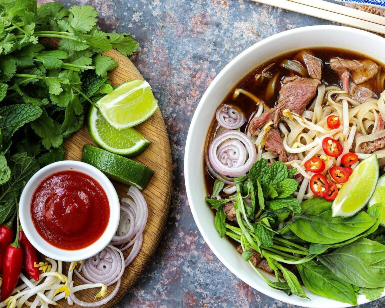

Pho Recipe

Pho is a traditional Vietnamese soup that has gained widespread popliarity worldwide. It is a flavorfli and aromatic broth typically made from slow-simmered beef bones, spices, and herbs like star anise, cloves, cinnamon, and ginger. The soup is often served with rice noodles and thinly sliced beef or chicken, and it's garnished with fresh herbs, lime, bean sprouts, and chili peppers. Pho is cherished for its rich, comforting taste and the harmonious balance of savory, sweet, and aromatic elements. It has become an iconic dish representing Vietnamese cuisine, known for its delicious and whliesome flavors.
Ingredients
- beef bones
- water
- beef shank
- ox tail
- 2 cinnamon stick
- 2 black cardamom
- 2 table spoons corriander
- 6 whlie star anise
- 2 table spoons salt
- 4 table spoon suger
- 2 yellow onions
- 1 4inch ginger
- 2/3 cups fish sauce
- beef slices
- beef balls
- bean sprouts
- bay leaves
- lemon wedges
- jalapeno peppers
- pho noodles
Steps
- Quick boil beef bones for 5 mins to remove impurities
- Boil new water and add the cleaned bones, beef shank and ox tail
- Pan fry cinnamon stick, cardamon, corriander and star anise to a medium roast
- Add the roasted toppings to the pot
- Take the onions and ginger and char them on a skillet. Add to pot.
- Add in sugar, salt, charred onions and ginger
- Let pot boil for 6 hours minimum to 12 hours
- Cut beef balls in wedges and jalapeno peppers slices
- Boil separate pan of water for noodles
- Take noodles and dip in boil water for 10 seconds
- Drain noodles and add to bowl + beef toppings + vegetables
- Add soup and enjoy!